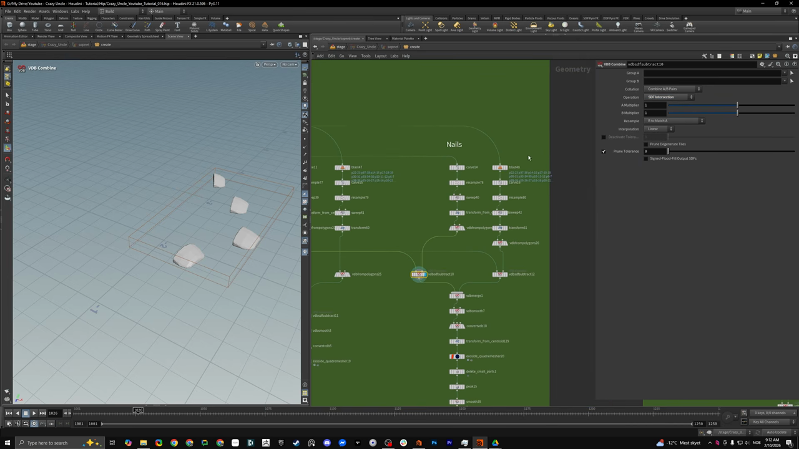
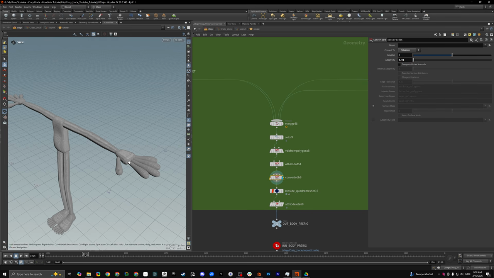
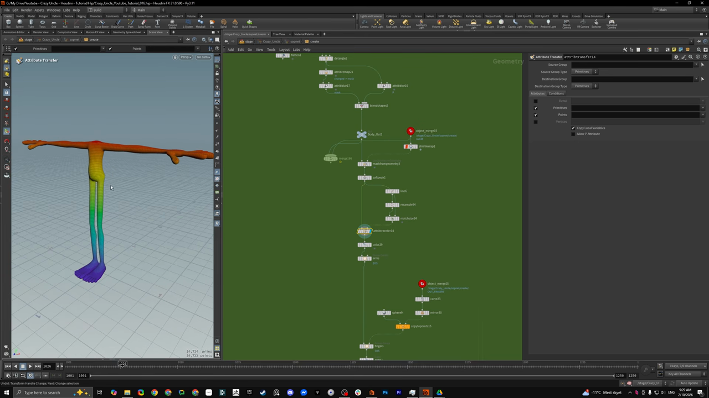
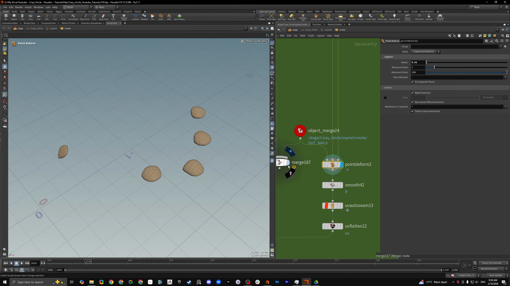
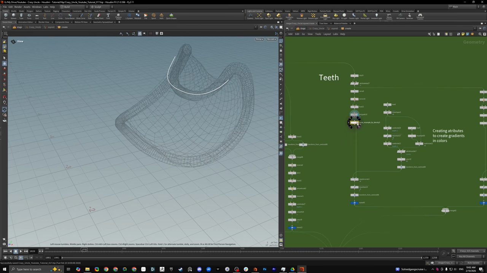
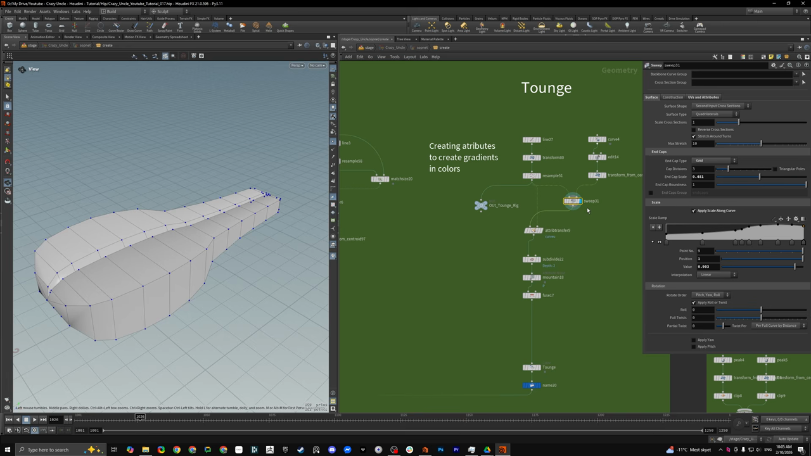
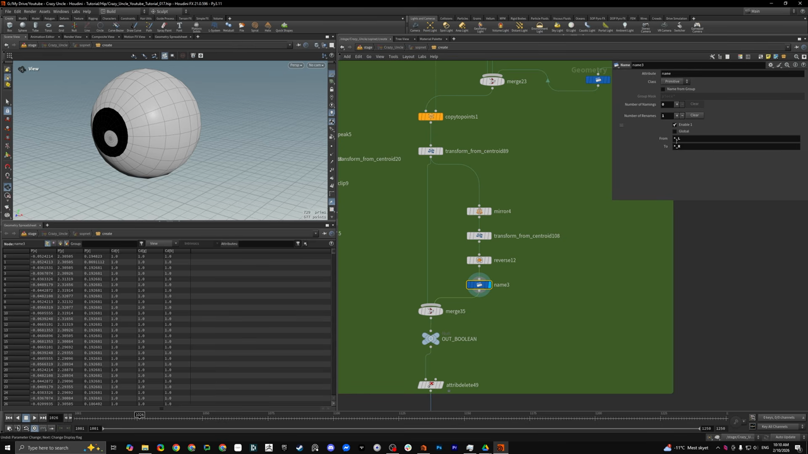

Houdini キャラクター制作 2 — VDB と Quad Remesher でプロシージャルにモデリングする
出典: Character Creation 2 | Procedural Modeling Workflows （SideFX 公式チュートリアル Create a Procedural Character の第2回 / 講師 Roy Kristoffersen さん / Houdini FX 21.0.586 / 48:17 / 英語）。 このページは、上記の動画を見ながら自分用にまとめた日本語の学習メモです。SideFX 公式の翻訳ではありません。 前回は第1回 プリリグでモデルを駆動する、シリーズ全体は第0回にまとめています。
この回で扱うこと
シリーズ最長の48分の回です。前回作ったプロキシジオメトリを、実際に使えるモデルに仕上げていきます。
- VDB を使ったモデリングと、ポリゴンのブーリアンより VDB が楽な理由
- 指の線から爪をプロシージャルに生やす手順
- Quad Remesher で変形に耐えるトポロジーを作る
- Houdini 内でのスカルプトと、ZBrush との往復
Point Deformでスカルプトの差分を別パーツに伝える- 頭・歯・歯茎・舌・目の作り方
1. Sweep の Apply Scale Along Curve
前回は Sweep をそのまま使っていましたが、この回では Sweep の Scale セクションにある
Apply Scale Along Curve を有効にして、Scale Ramp で太さの変化を付けています。
これを使うと、実際にメッシュをスカルプトする前の段階で カーブに沿った「プロシージャルなスカルプト」ができます。 脚・腕・指のすべてでこの形が使われていました。
胴体はもう少し手が加えられていて、Subdivide と Soft Transform でお腹のふくらみを作っています。
どこをふくらませるかは Group Create の Keep in Bounding Regions（Bounding Box）で決めていて、
バウンディングボックスを動かすとふくらみの位置が動きます。背中側も同じ作りでした。
2. 指から爪をプロシージャルに生やす
この回でいちばん面白かったところです。爪を別途モデリングするのではなく、 指を作っている線そのものから爪を生成します。

手順
- 指の線に
Carveをかけます。これで線の長さを調整でき、爪を置きたい範囲だけを取り出せます Resample→Sweep→Transformで爪の形のジオメトリを作りますVDB from Polygonsで VDB にします- 指本体の VDB から
VDB Combineで引き算します。これで爪が入る溝ができます - 爪そのものは、同じように作った VDB を
VDB Combineの SDF Intersection で交差させて作ります Merge→VDB Smooth→Convert VDB→TransformExoside QuadRemesher→Delete Small Parts→Peak→Smooth→Color→Mirror
ネットワーク上のノード名は vdbsdfsubtract10 のようになっていますが、
実体は VDB Combine です。上の画像のパラメータパネルで
Collation が Combine A/B Pairs、Operation が SDF Intersection になっているのが見えます。
溝を掘るときは Operation を差分側にします。
ここで嬉しいのは、あとから指を長くしたり短くしたりしても 爪が自動的に付いてくることです。動画でも実際に指を伸ばして見せていて、 爪と溝の両方がそのまま追従していました。爪だけ作り直す必要がありません。
3. VDB と Convert VDB の Adaptivity
VDB はジオメトリをボリュームに変換したものです。バラバラのポリゴンを全部まとめて 1つの塊にしてくれるので、パーツを個別に作ってから統合する、という進め方ができます。 サンプリングサイズを変えると粗さが変わります。

merge46 → color9 → vdbfrompolygons8 → vdbsmooth4 → convertvdb6
→ exoside_quadremesher15 → attribdelete60 → OUT_BODY_PRERIGConvert VDB の Adaptivity がポリゴン数を大きく左右します。
動画で実演されていた数字はこうでした。
| Adaptivity | 結果 |
|---|---|
| 0 | 200〜300万ポリゴン程度。かなり密になります |
| 0.1 | 45〜47万ポリゴン程度 |
講師の方は「Houdini にとって300万ポリゴンは大したことない」と言いつつ、
実際には 0.1 に落として進めていました。ポリゴン数の確認は D キーからガイド表示の
Draw Time と Geometry を Always On にすると見られます。
Quad Remesher について
使われているのは Exoside QuadRemesher です。 有料プラグインで100ドルほど。講師の方は「その価値は十分ある」と言っていました。 SideFX 内蔵の Quad Remesh でも同じことができる、とのことです。
ここまでで「VDB でざっくり形を作って、Quad Remesher できれいな四角ポリゴンに張り替える」という ZBrush の Dynamesh に近い流れが Houdini 内で完結します。
4. Houdini の中でスカルプトする
張り替えたメッシュに対して、Houdini のスカルプトツールで直接形を整えていきます。
Pキーで対称（ストロークのミラー）を切り替えます- 主に Move ブラシと、少しスムースをかける程度で進めていました
- 操作感は ZBrush や Maya のスカルプトとよく似ている、とのことです
数百万ポリゴンを飛び回らせるような ZBrush 的な超高密度スカルプトは 「まだ試していないので分からない」と正直に話されていました。 ただ大きな形を作る範囲では十分実用的だそうです。
より作り込みたい場合は GoZ で ZBrush に送って戻すこともできます。 GoZ の書き出しと読み込みはとても良くできていて、Maya で使っていたときより Houdini のほうが具合が良い、という話でした。今回のプロジェクトでは Houdini 内で完結させています。
5. 足を接地させる Detangle と、マスクでのブレンド
足の裏が床に対して平らになるように接地させています。Detangle を使うのですが、
ここで面白いのはその後の処理です。

Detangleをかけます。これはchangedというアトリビュートを出してくれますAttribute Remapでそのchangedをmaskに変換しますAttribute BlurでマスクをぼかしますBlend Shapesで、元の形と接地させた形をそのマスクで混ぜます
同じことは Flatten でもできますが、結果が完全に平らになってしまいます。
Detangle 経由でマスクを作ってブレンドすると、もう少し自然な接地になる、というのが
ここでの狙いです。
Shrinkwrap と Soft Peak の組み合わせ
同じ画像の左上に見えている shrinkwrap1 → maskfromgeometry1 → softpeak1 の並びは、
服と体が当たっているところにマスクを作って、体側をわずかに凹ませる仕掛けです。
Mask from Geometry で当たり判定からマスクを作り（半径と強度を調整できます）、
それを Soft Peak に渡します。ここでも嬉しいのは、
パンツを短くして半ズボンにしたとしても、Shrinkwrap が自動で更新され、
マスクも Soft Peak の効き方もそれに合わせて動くことです。
6. curveu アトリビュートで色のグラデーションを作る
上の画像のビューポートで脚が虹色になっているのがこれです。 0 から 1 に変化するアトリビュートを作って、それをランプで色に変換しています。
Lineを上向きに置きますResampleで十分な解像度にします。このとき Curve U のアトリビュートを作らせますMatch Sizeで、色を付けたい範囲の長さに合わせますAttribute Transferでそのアトリビュートをキャラクターに転送しますColorの設定をConstantではなく Ramp from Attribute にして、 そのアトリビュートを指定します
これでランプを触るだけで色の変化を自由に作れます。腕・爪・歯など、いろいろな場所で 同じ仕掛けが使い回されていました。
グループを別ジオメトリから作る
爪の色分けでは、リグからカーブを取って Carve で端点だけにし、
Copy to Points で球を配置してからグループを作っています。
ここで使うのが Group Create の Keep in Bounding Regions です。
ポイントを Bounding Box ではなく Bounding Object にして、
さらに Points or Vertices Only を選ぶと、
第2入力に挿したジオメトリの形でグループを作ってくれます。
色の境目がガタつくので、最後に Attribute Blur でならしていました。
7. アンビエントオクルージョンを色に混ぜる
陰影を色に焼き込む定番の組み方として紹介されていた手順です。
- Physical Ambient Occlusion をかけます。これは
AO maskというアトリビュートを作ります Attribute RemapでAO maskをCdに変換しますAttribute Combineで元の色と掛け合わせます
掛ける強さを 5 くらいにすると AO がかなり強く乗り、動画では控えめに 0.2 程度で使っていました。 「いつも同じセットアップを使い回している」とのことです。
8. UV
Group Createで Group Type を Edges にしてシームを選びます。 ダブルクリックと Shift でループ選択ができます- グループ名は必ず
seamsにします。UV Flattenがこの名前を見に行くためです UV Flattenで展開しますUV Layoutで配置を整えます
爪などの細かいパーツでは UV AutoSeam → UV Flatten という
自動化された組み合わせも使われていました。
9. Point Deform でスカルプトの差分を伝える
ここは実務でよく効きそうなところです。 スカルプトする前のジオメトリから爪を生成しているので、 本体をスカルプトすると爪の位置が合わなくなります。 実際に動画でマージして見せていて、確かに浮いたりめり込んだりしていました。

これを Point Deform で解決します。このノードは入力を3つ取ります。
| 入力 | 渡すもの |
|---|---|
| 1. mesh to deform | 変形させたいジオメトリ（ここでは爪） |
| 2. rest point lattice | スカルプト前のジオメトリ |
| 3. deformed point lattice | スカルプト後のジオメトリ |
2 と 3 の差分を計算して、それを 1 に適用してくれます。
つまり本体に加えたスカルプトが、そのまま爪にも伝わります。
直後は少しガタつくので Smooth をかけていました。
パラメータは Mode が Capture and Deform、Capture の Radius が 0.01、
Minimum Points 1 / Maximum Points 100、Pre-Separate Pieces と Recompute Affected Normals が
オンになっていました。
10. 頭を作る
頭も考え方は同じで、単純なジオメトリをたくさん置いてから VDB でまとめ、スカルプトします。 ZBrush でこぶを盛っていく感覚に近い進め方です。
ポリゴンのブーリアンではなく VDB でブーリアンするのがポイントとして挙げられていました。 VDB のほうが素直に結果が出る、とのことです。
| パーツ | 作り方 |
|---|---|
| あご・下あご | 球から。少しスカルプト |
| 口（笑い口） | カーブ → Resample → PolyPath → Sweep → VDB from Polygons。カーブを変えれば口の大きさもその場で変わります |
| 口の中（空洞） | 口のジオメトリに Peak をかけて VDB にし、VDB Combine の差分で頭から引きます |
| 後頭部 | スカルプトと Subdivide |
| 耳 | 球3つ。左右対称なので片方だけ作って Mirror |
| 額 | ボックスから |
| 鼻・小鼻 | カーブから。太さやスケールはカーブに沿って調整 |
| 目の穴 | 目を配置してから VDB Combine の差分でくぼみを作ります |
口の中を空洞にするのは ZBrush だと面倒だったが、VDB なら
Peak して引き算するだけで済む、という話が印象的でした。
最後に頭全体を首のジョイントに Copy to Points で乗せ、
首は Resample → Sweep で作り、VDB で統合してから Quad Remesher にかけます。
そこからスカルプトとカラーリングに入ります。
ノードをロックしている箇所がありました。ロックしておかないと、 上流を触ったときに下流が全部影響を受けてしまうためだそうです。
11. 歯・歯茎・舌・目
歯茎と唇
頭を Object Merge で読み込み、Edge Group to Poly Lines で
エッジからカーブを取り出しています。エッジを Shift で選択して、そこからカーブを作る流れです。
そのカーブに Skin をかけると口の内側になります。
唇は Fuse → PolyExtrude → Reverse → Subdivide → Smooth。
すべて頭のスカルプトから派生しているので、頭を直せば唇も付いてきます。
歯

- 片側だけ作って
Mirrorします - 上の歯を
Carveで取り出し、PolyPath→Fuse→ もう一度PolyPath curve_resample_by_densityという名前のノードで、カーブ上の点の分布を調整します。 点を元のパスに沿って動かせるので、歯の並びを整えるのに使っていました- 歯の形は
Linear Taperで先細りにし、Subdivide→Mountain（少しでこぼこさせる）→Subdivide - 色は前述の curveu +
Match Size（Scale to Fit / Uniform Scale）+ ランプの組み合わせ
点の密度を変えれば歯の本数を好きなだけ増やせます。下の歯も同じ組み方で、 スケールなどが少し違うだけでした。
舌

舌は Sweep の使い方の良い例になっていました。
line27 → transform80 → resample51 → sweep31 → attribtransfer9 (curveu)
↑
curve4 → edit14 → transform_from_centroid
（断面カーブ）
→ subdivide22 → mountain18 → fuse17 → ToungeSweep の Surface Shape を Second Input Cross Sections にすると、
第2入力に挿したカーブがそのまま断面になります。
丸いチューブ・四角いチューブ・リボンといった既製の断面だけでなく、
自分で描いたカーブを断面に使えます。
ここでは Curve → Edit → Transform で舌の断面を作っていました。
同じパネルの Scale セクションに Apply Scale Along Curve と Scale Ramp があります。 これが冒頭から繰り返し出てくる「スケールをカーブに沿って適用する」の正体です。
目と、Name ノードによる左右のリネーム

目は球をたくさん置いて Copy to Points → Transform from Centroid → Mirror
というシンプルな作りですが、講師の方が「これはぜひ紹介したい」と言っていたのが
Name ノードによるリネームです。
merge23 → copytopoints1 → transform_from_centroid89 → mirror4
→ transform_from_centroid108 → reverse12 → name3 → merge35 → OUT_BOOLEANName ノードの Number of Renames を 1 にして、
| 欄 | 値 |
|---|---|
| From | *_L |
| To | *_R |
と入れます。アスタリスクが元の名前の前半にマッチして、そのまま To 側に引き継がれるので、
eye_white_L が eye_white_R になります。
ミラーしたパーツの名前を一括で付け替えられるので、
左右対称のものを作るときに便利そうです。
この回のまとめ
Sweepの Apply Scale Along Curve で、メッシュを触る前に形を作り込めます- 爪は指の線から
Carve→Sweep→VDB Combineで生成できて、指を変えても追従します Convert VDBの Adaptivity でポリゴン数を調整します（0 で約300万、0.1 で約47万）- VDB でざっくり作って Quad Remesher で張り替える流れが、Houdini 内で完結します
Point Deformは「スカルプト前」と「スカルプト後」を渡すと、その差分を別パーツに伝えてくれますSweepの Second Input Cross Sections で、自作カーブを断面にできますNameノードの From*_L/ To*_Rで左右のリネームが一発で済みます
次の第3回は Cloth Modeling Workflows で、服のモデリングに入ります。